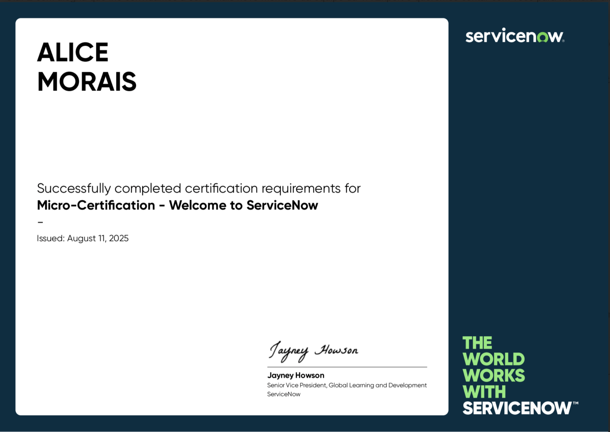
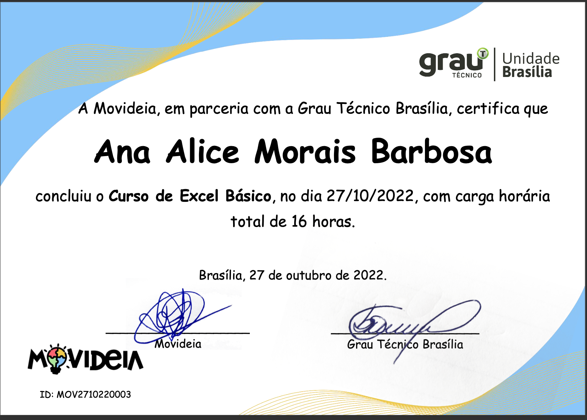
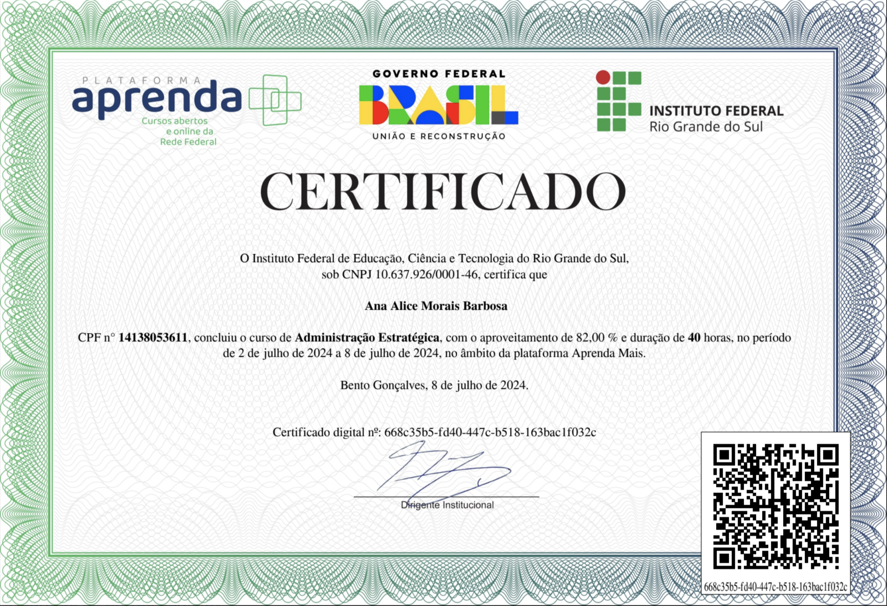
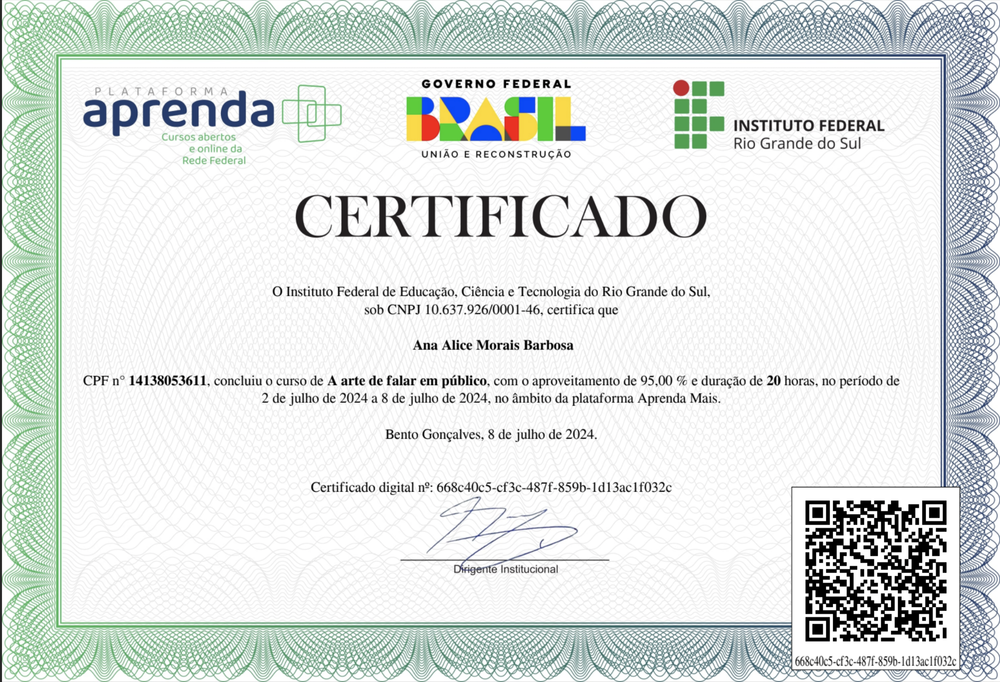
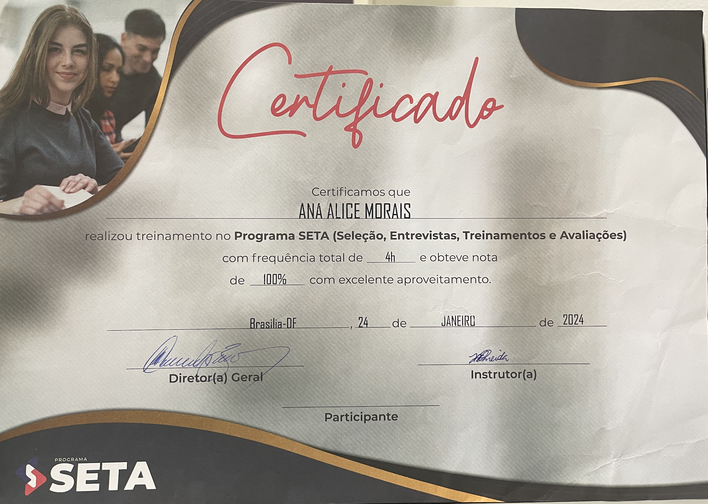

Me chamo Ana Alice, tenho 20 anos e estou cursando o primeiro semestre em Ciência da Computação. Atuamente trabalho como treeine ServiceNow, estou gostando muito da experiência e pretendo ingressar na área de desenvolvimento dentro do ServiceNow, logo acredito que a faculdade me trará os conhecimentos necessários para que eu possa me tornar uma excelente profissional.





Gosto de estar por dentro dos acontecimentos mundiais, e um dos canais que mais acompanho é o Planeta Novo. Eles estão sempre atualizando o perfil com notícias fresquinhas, como por exemplo:
Minha terra Natal tem o formato de um avião:
Brasília, onde nasci e cresci.